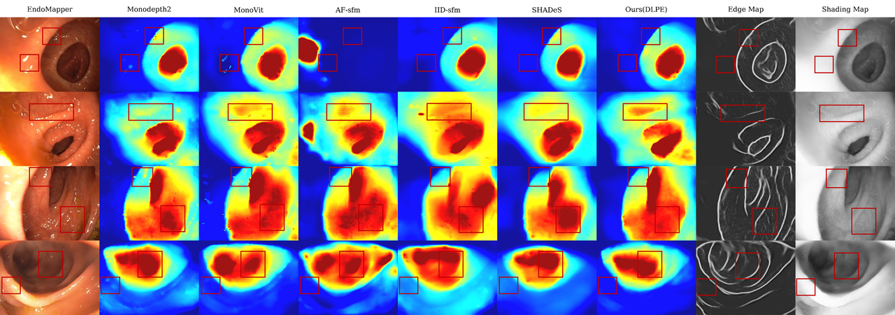
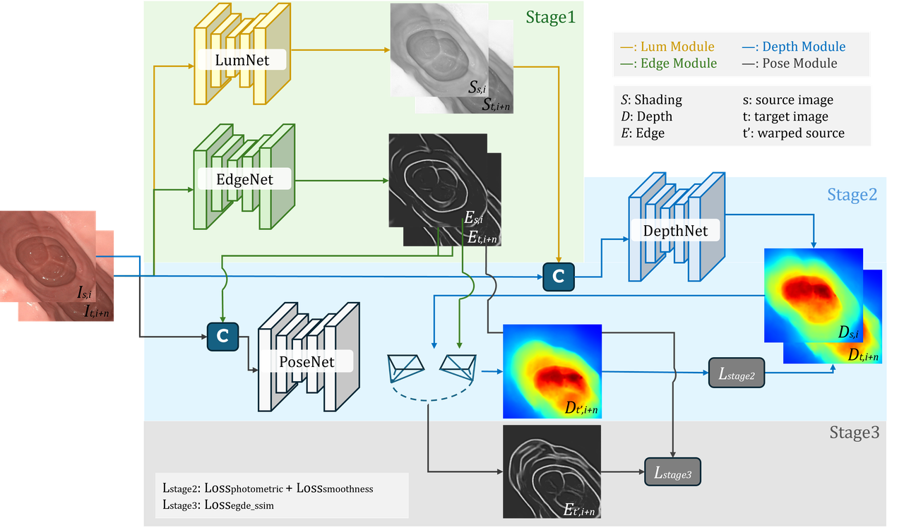

Shading-aware depth
RGB and intrinsic shading provide complementary appearance and illumination cues to DepthNet.
Endoscopic depth and pose estimation
Pose Refinement with Intrinsic Shading and Edge Maps
Multi-Modal Monocular Endoscopic Depth and Pose Estimation with Edge-Guided Self-Supervision

PRISM is a self-supervised framework for monocular depth and camera-pose estimation in colonoscopy. It supplements RGB images with two complementary cues: intrinsic shading supports depth prediction, while structural edge maps guide pose estimation.
The method is designed for difficult endoscopic scenes containing weak texture, non-uniform illumination, specular reflections and domain variation.
The comparison below shows input colonoscopy video alongside predicted depth from PRISM and representative self-supervised baselines. PRISM preserves anatomical structure while producing temporally coherent depth.
The three-stage pipeline first produces shading and edge modalities, then jointly learns depth and pose through view synthesis, and finally refines pose while keeping the learned depth representation fixed.

RGB and intrinsic shading provide complementary appearance and illumination cues to DepthNet.
RGB and structural edges help PoseNet estimate motion in low-texture and reflective scenes.
Code, checkpoints, preprocessing, dataset splits and paper configurations are publicly available.
If you use PRISM in your research, please cite:
@article{ju2026prism,
title={Multi-modal monocular endoscopic depth and pose estimation with edge-guided self-supervision},
author={Ju, Xinwei and Daher, Rema and Stoyanov, Danail and Bano, Sophia and Vasconcelos, Francisco},
journal={International Journal of Computer Assisted Radiology and Surgery},
year={2026},
doi={10.1007/s11548-026-03669-1}
}